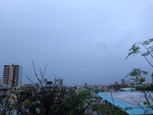
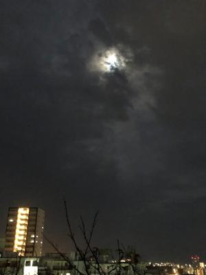

うるがいの話 ある日
最新: デストロイヤー【うるがいの話 ある日】とは 一日だけのプログです
『うるがいの話』の最新一日だけのプログで、通信料が少なく経済的だ。カニの画像をクリックすると全ての日付が載る『うるがいの話』サイトを表示します
|
|
【うるがいの話】 うるがい(ｳﾙｶﾞｲ urugai)とは、『もずくがに』の名前でとても大きくなります。 |
|---|---|
|
|
【カミマヤーの話】 猫のことを方言でマヤーといいます。カミマヤー（kamimayaa）とは、神の猫のことです。 |
|
【たながぁの音楽】 たながぁ（ﾀﾅｶﾞｰ tanagaa）とは手長えびのことで、何種類かあり大きいのは車 エビぐらいになります。 |

|
【ぶながぁの話】 ぶながぁ(ﾌﾞﾅｶﾞｰ bunagaa)とは、赤い髪の毛、赤い身体、そして身長は１ｍ２０ｃｍ ぐらい、川の蟹を食べているの目撃された。場所は沖縄県国頭郡大宜味村のと ある村僕の隣近所に住んでいる爺さんから、聞いた話です。 |
|
|
【ギーマの話】 ギーマ(giima)とは、山原の里山に咲くスズランに似た、 花を付けます。実は食べられます、 気が付くと口の周りが紫になっています。 |
2022年11月11日 (金）デストロイヤー
16:57
 
初老の人の朝は４時起き（寝たのは夜１０時なので・・・）、それから朝の作
務をこなし、最後に洗濯物を干すのだが、６時過ぎはまだ夜が明けない。西の
空を見ると、満月が見える。昨日、子供は羽根が壊れた扇風機を持って来た。
みると、羽根が抜けたり、割れたりしている。洗濯物の紐が巻き付いたらしい
が。Ａｍａｚｏｎで、扇風機の羽根が買えるか調べた。 羽根は２，５３０円
だが、送料が１、９７０円、合計４、５００円、ン～高い。デオデオに電話す
ると在庫を確認してくれて、３，０８０円で買える事が分かり、注文すること
にした。子供は、スマホが調子が悪いといって、借りた代替機もディスプレイ
に縦線がはいる故障をさせ、代替機の保証料５千円を払ったばかり。軽自動車
の窓ガラスの不具合は、ドアを上下するハンドルが壊れたことが原因とのこと
デストロイヤー. 破壊する者。破壊者。
１６時５２分 ビットコインの総資産 ￥７、１２３↑